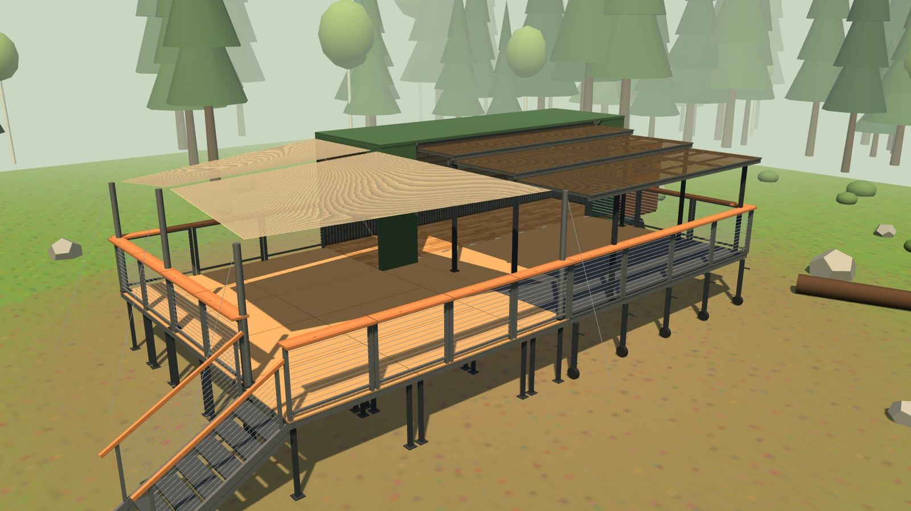

A community build · Eugene, Oregon
The goal is a used box truck that becomes a mobile bar with a railed deck for a crowd, packs everything inside for travel, and sets up with a small crew. The films and model show one concept. Materials, mechanisms and methods are open.

Goals
Deck, cover, railings, stairs, bar and seating all ride in or on the truck, secured for the road, on a regular driver's license.
A level, railed deck of roughly 670 sq ft at the truck's floor height, set up on uneven ground.
Meet the building-code crowd load for assembly platforms, with railings and exits that pass an inspection, and an engineer's stamp.
Cover over part of the deck, safe to take down in high wind, and weather-tight on the road.
A bar counter, power for a full event without a running generator, ice, hand and wash sinks, and tables and seating.
The build, seating, tables, ice, drinks, water and crew all ride in the one truck, within its rated payload. No support vehicle.
Open and pack up in reasonable time with simple tools and few loose parts.
Any opening cut into the box restores its strength, so the truck stays safe to drive.
Targets
Open decisions
The concept answers each of these one way. Every one of them is still open.
Make, age and payload of the base truck.
Fold-out, slide-out, separate platforms or a mix, and how it lowers and levels.
Aluminum, steel, wood or composites for the frame, decking and railings.
Sliding roof, awning, sails or tents, and how each handles wind and rain.
Stair design, placement and how the stairs stow.
Bar layout, battery or generator power, water and sinks.
Ideas on the table
Each idea below has a film in the next section, along with close-ups of how the parts mount and pack. None of them is decided.
The same rail panels close the side deck's rear end, and the rear stair hooks on there. The platforms and extra rails stay stacked at the venue. About half the setup and teardown work, for smaller events at a lower price.
A band plays under the shade sails, facing the audience on the lawn. The rear stair can hook on at the back of the stage as a backstage stair, and a standard rail panel fills its usual spot.
The folded bar frame works as a headboard for the platform stack. Platforms pin together, rail panels stand in floor sockets, the stairs hang on a catch bar, and a few straps finish the job.
Manual: two workers roll each tier out on its tracks and pin the legs. Automated: motors, belts and leg actuators on one button, with a wind sensor that pulls the roof in. Automation is faster, but adds cost, wiring and battery load.
Carbon fiber roof beams, rafters and legs, sail posts and rail posts, with honeycomb stair treads and a lighter floor and wall finish. About 1,600 lb lighter, enough to carry everything in the one truck. About $19,000 more in materials.
Three ways to finish the same truck. Light: aluminum honeycomb floor panels everywhere, the lightest build. Western: cedar plank floors where guests walk and oil-rubbed bronze railings, like an old saloon porch. Western inset: the same cedar, set flush inside aluminum edge frames. The Western builds are about 580 and 780 lb heavier, so they need a truck with about 11,000 lb of payload, and they cost less, because cedar is cheaper than honeycomb panels.
Rough estimate for a trained crew: about 20 man-hours to set up and tear down the full venue, and about 10 for a small venue.
Concept films
These films show one worked concept, to make the goals concrete. They are a starting point, not a decision.
How the loose parts mount, lock and pack.
Explore in 3D
The concept's deck mechanism. Drag to look around, scroll to zoom, and press Open or Close to run the setup.
Works best on a laptop or desktop.Open the model full screen
Reference files
The worked concept behind the films. Use it as a reference, not as a plan.